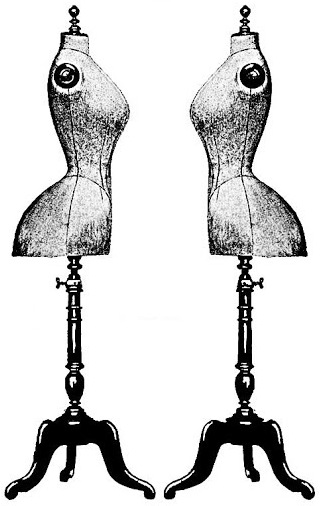

identite
" Restez vous-même, tous les autres sont déja pris." Oscar Wilde
Nous savons aujourd'hui que le rêve est le siège de notre inconscient. Son discours se situe dans le sommeil paradoxal, phase spécifique de notre conscience qui accueille notre dimension onirique. Vous êtes-vous déja interrogé sur l'identité que votre inconscient vous attribut lorsque vous vous rêvez ? Vous reconnaissez-vous dans ce personnage onirique qui vous représente lors de cette activité fantasmagorique ? Et si notre identité onirique était notre vraie identité, au détriment de celle que nous comprenons de nous consciemment ?
Par définition l'identité est ce qui permet de différencier, sans confusion possible, une personne, un animal ou une chose des autres. En psychologie, l'identité est la conscience que l'on a de soi-même, ainsi que par la reconnaissance des autres, de ce que l'on est, de son moi. Elle permet à l'individu de percevoir ce qu'il a d'unique, c'est-à-dire son individualité. Elle se façonne durant les premières années de la vie et l'adolescence en s'appuyant sur des caractéristiques de sa personnalité, l'éducation ou encore la culture et l'environnement social. Durant la vie, elle s'entretient grâce à ces influenceurs. Bien entendu, cette identité ressentie n'est pas rigide et se bonnifie au fil des expériences de vie. Autrement dit, l’identité personnelle indique la reconnaissance qu’un individu a de sa différence par rapport à autrui. C’est une combinaison unique de traits personnels, les attributs spécifiques qui font que chaque individu est différent d’autrui.
L’identité comporte aussi bien des éléments liés aux rôles sociaux et à l’appartenance aux groupes que des éléments plus anciens, comme les valeurs liées à sa socialisation première et à son histoire personnelle, faisant à la fois sa différence et son unicité. C'est pris comme est un système dynamique de valeurs, de représentations du monde, de sentiments nourris par les expériences passées, et de projets d’avenir se rapportant à soi.
La perception de sa propre identité implique le ressenti, souvent non conscient, d’être la même personne tout au long de sa vie, et fait appel à un ensemble de représentations de soi. Ces dernières, caractérisant l’individu sur le plan psychique ou physique, forment son identité personnelle. L’identité sociale, quant à elle, implique les rôles sociaux que l’individu occupe de manière plus ou moins permanente, mais également les caractéristiques psychiques ou physiques qui, de manière transitoire, peuvent prendre une importance dans un contexte social particulier.
L’identité humaine peut également être abordée sur le plan social, car la vie en société confère aux êtres humains, par rapport aux objets, un type de caractéristiques supplémentaire, désignant leur place, leur rôle et leur fonction au sein de la société dans laquelle ils vivent. L’ensemble de ces caractéristiques constitue l’identité sociale d’une personne. Bien qu’il s’agisse de deux niveaux différents sur le plan conceptuel, l’identité personnelle et l’identité sociale restent difficilement dissociables l’une de l’autre dans la vie de tous les jours. Par ailleurs, les caractéristiques physiques, psychiques et sociales formant l’identité peuvent non seulement être perçues de l’extérieur, mais également de l’intérieur, par la personne elle-même. Ainsi, une personne peut non seulement décrire ce qui la différencie ou la rapproche des autres, mais elle possède également un sentiment d’identité qui lui est propre et difficilement traduisible par les mots.
Par définition l'identité est ce qui permet de différencier, sans confusion possible, une personne, un animal ou une chose des autres. En psychologie, l'identité est la conscience que l'on a de soi-même, ainsi que par la reconnaissance des autres, de ce que l'on est, de son moi. Elle permet à l'individu de percevoir ce qu'il a d'unique, c'est-à-dire son individualité. Elle se façonne durant les premières années de la vie et l'adolescence en s'appuyant sur des caractéristiques de sa personnalité, l'éducation ou encore la culture et l'environnement social. Durant la vie, elle s'entretient grâce à ces influenceurs. Bien entendu, cette identité ressentie n'est pas rigide et se bonnifie au fil des expériences de vie. Autrement dit, l’identité personnelle indique la reconnaissance qu’un individu a de sa différence par rapport à autrui. C’est une combinaison unique de traits personnels, les attributs spécifiques qui font que chaque individu est différent d’autrui.
L’identité comporte aussi bien des éléments liés aux rôles sociaux et à l’appartenance aux groupes que des éléments plus anciens, comme les valeurs liées à sa socialisation première et à son histoire personnelle, faisant à la fois sa différence et son unicité. C'est pris comme est un système dynamique de valeurs, de représentations du monde, de sentiments nourris par les expériences passées, et de projets d’avenir se rapportant à soi.
La perception de sa propre identité implique le ressenti, souvent non conscient, d’être la même personne tout au long de sa vie, et fait appel à un ensemble de représentations de soi. Ces dernières, caractérisant l’individu sur le plan psychique ou physique, forment son identité personnelle. L’identité sociale, quant à elle, implique les rôles sociaux que l’individu occupe de manière plus ou moins permanente, mais également les caractéristiques psychiques ou physiques qui, de manière transitoire, peuvent prendre une importance dans un contexte social particulier.
L’identité humaine peut également être abordée sur le plan social, car la vie en société confère aux êtres humains, par rapport aux objets, un type de caractéristiques supplémentaire, désignant leur place, leur rôle et leur fonction au sein de la société dans laquelle ils vivent. L’ensemble de ces caractéristiques constitue l’identité sociale d’une personne. Bien qu’il s’agisse de deux niveaux différents sur le plan conceptuel, l’identité personnelle et l’identité sociale restent difficilement dissociables l’une de l’autre dans la vie de tous les jours. Par ailleurs, les caractéristiques physiques, psychiques et sociales formant l’identité peuvent non seulement être perçues de l’extérieur, mais également de l’intérieur, par la personne elle-même. Ainsi, une personne peut non seulement décrire ce qui la différencie ou la rapproche des autres, mais elle possède également un sentiment d’identité qui lui est propre et difficilement traduisible par les mots.

Quant à l’identité sociale, elle désigne l’ensemble des caractéristiques qualitatives par lesquelles un individu se reconnaît comme appartenant à un groupe. Ces caractéristiques peuvent être multiples (socioprofessionnelles, physiques, relationnelles, géographiques, culturelles, etc.) et sont plus ou moins saillantes en fonction du contexte social dans lequel l’individu se trouve. Ces caractéristiques sont tout d’abord acquises via les interactions au sein du cercle familial proche avant de s’étendre à des groupes plus larges. La formation de l’identité sociale répond à deux grandes motivations. La première est la nécessité cognitive de catégoriser son environnement social afin de faciliter le traitement des informations le concernant. Cela implique également d’être en mesure de se catégoriser soi-même dans cet environnement social, c’est-à-dire se définir d’un point de vue social. Dans un contexte social, les individus semblent d’ailleurs préférer se définir selon leurs caractéristiques sociales (se présenter comme exerçant une profession particulière), plutôt que par leurs caractéristiques personnelles (se présenter comme étant habile), plus abstraites et moins perceptibles par autrui. La deuxième motivation à construire une identité sociale est d’ordre affectif. Elle comprend la motivation de l’enrichissement de soi et le besoin de reconnaissance de la part d’autrui.
Se rajoute à l'élaboration de l'identité, les croyances et les valeurs. Si les croyances ont une dynamique limitante, alors les valeurs s'en trouveront également freinées et l'identité perçue n'en sera que la résultante. Encore plus lorsque certaines croyances et valeurs n'appartiennent pas au sujet qui se voit alors imposé un pan d'identité comme dans certaines cultures, milieux sociaux ou spirituels.
En bref, l’identité c’est ce qui rend semblable à soi-même et différent des autres. C'est un de ces filtres qui permet une forme de compréhension du monde. "Car je me définis ainsi, je comprends le monde et les autres de cette façon ! " Ainsi, Ne trouvez-vous pas plus logique de se référencer identitairement au Moi que je serai au lieu du Moi que j'ai été. Et imaginez un instant que vous pouvez vous connecter à votre "identité inconsciente", celle qui n'est pas sous l'influence de l'extérieur et ainsi vous donnez les moyens de lever les dictates de votre environnement, de ses influenceurs et de percevoir le monde au travers d'elle.
Se rajoute à l'élaboration de l'identité, les croyances et les valeurs. Si les croyances ont une dynamique limitante, alors les valeurs s'en trouveront également freinées et l'identité perçue n'en sera que la résultante. Encore plus lorsque certaines croyances et valeurs n'appartiennent pas au sujet qui se voit alors imposé un pan d'identité comme dans certaines cultures, milieux sociaux ou spirituels.
En bref, l’identité c’est ce qui rend semblable à soi-même et différent des autres. C'est un de ces filtres qui permet une forme de compréhension du monde. "Car je me définis ainsi, je comprends le monde et les autres de cette façon ! " Ainsi, Ne trouvez-vous pas plus logique de se référencer identitairement au Moi que je serai au lieu du Moi que j'ai été. Et imaginez un instant que vous pouvez vous connecter à votre "identité inconsciente", celle qui n'est pas sous l'influence de l'extérieur et ainsi vous donnez les moyens de lever les dictates de votre environnement, de ses influenceurs et de percevoir le monde au travers d'elle.
EN RELATION

TRANSGENERATION
VALEUR
PERSONNALITE
LEGITIMITE